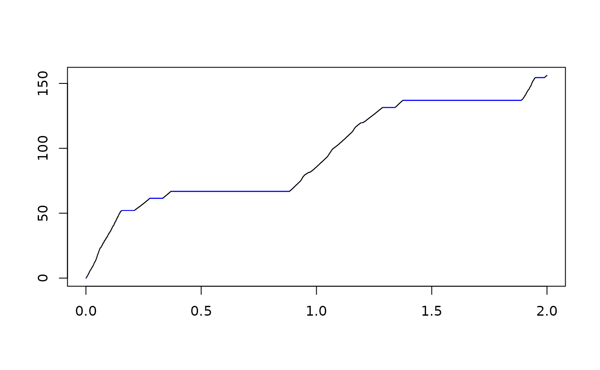

Plotting age-depth models
This vignette describes the plotting options for plotting age-depth models.
Simple age-depth models (class “adm”)
As example, we use the age-depth model taken 4 km offshore in a carbonate platform modeled using CarboCAT Lite (Burgess 2013, 2023). This data is provided with the package.
adm = tp_to_adm(t = CarboCATLite_data$time_myr,
h = CarboCATLite_data$height_4_km_offshore_m,
L_unit = "m",
T_unit = "Myr")The adm can be directly plotted using the standard plot
command from R. It can be modified using the arguments listed under
?plot.adm
plot(adm,
lwd_destr = 1,
lty_destr = 4,
col_destr = "blue",
lwd_acc = 1,
lty_acc = 1,
col_acc = "black")
Here the prefixes lwd, lty, and
col stand for line width, line type, and color
respectively. The suffix destr is for destructive
intervals, the suffix acc for intervals with sediment
accumulation.
Adding axis labels
Axis labels can be added using the functions T_axis_lab
(axis label of time axis) and L_axis_lab (length axis
label). By default, they use the units associated with the age-depth
model object. This behavior can be overwritten using the
labeland unit options. For more details, see
the help page under ?T_axis_lab and
L_axis_lab. As example, we plot only accumulating parts,
and add axis labels.
plot(adm,
lty_destr = 0,
lwd_acc = 3)
T_axis_lab(label = "Elapsed Model Time")
L_axis_lab(label = "Stratigraphic Height")Multiple age-depth models (class “multiadm”)
By default, multiadm plots median ages in red and the 95
% envelope in blue. See also ?plot.multiadm.
Lists in time and stratigraphic domain
admtools defines S3 classes timelist and
stratlist that are lists with one element that contain
time/stratigraphic information. They can be plotted as ordinary lists,
see ?plot.timelist and ?plot.stratlist for
details.